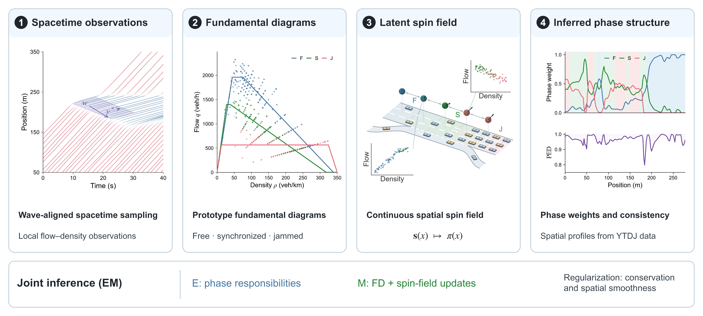

SpinFlow: A Physics-Informed Spin Field Framework for Traffic Phase Inference and Transition Detection

How can vehicle trajectories reveal the structure of a traffic transition? With SpinFlow, I study how free flow, synchronized flow, and wide moving jams coexist and compete across space. Inspired by interacting spins in statistical physics, we encode their local mixture through a continuous latent spin field. Physics-regularized expectation–maximization infers this field from wave-aligned trajectories with conservation and spatial-smoothness regularization. The Phase Equilibrium Degree measures consistency between inferred and observation-derived phase mixtures. Across four real-world datasets, flow reconstruction achieves R² values up to 0.940, and detected transitions in bottleneck cases align with documented lane-drop and on-ramp features. What interests me is the structure this representation makes visible: where phases coexist and where their balance breaks down. Turning that structure into a useful intervention signal remains a separate control problem.